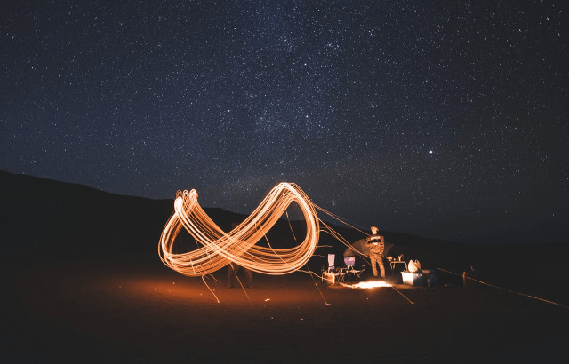

17 May 2024 4689 views
Planning a trip with friends and loved ones has always been tedious. Selecting dates, venues, modes of transportation, etc. are all like selecting a life partner.
To get away from all these cruxes, we decided to make solo travel the sine qua non (necessity) of the generation that believes in YOLO. We believe every person should travel solo once in their life. There are multiple benefits to the same and it is an experience beyond comparison. Let's dive into the reasons to travel SOLO once in this YOLO.
1. Self Awareness
Nothing can enrich your self-awareness more than when you find yourself alone in an unknown environment. It is the togetherness of enjoying, surviving that introduces us to our own selves. We come across our real thoughts when our actions are for people whom we might never come across again. We see our inner strength when we have no one else to share our luggage and our thoughts with. We consider self-awareness as the number one benefit of solo travel. NOTHING CAN UNLEASH THE REAL YOU, TILL YOU ARE ALL ON YOUR OWN.
2. New Amigos!
Traveling with a pack of people we know restrains us from knowing new people and making new friends. When we travel alone, we have a chance to meet a whole bunch of new people. We get to interact with them, learn about them, their culture, etc. There could be no better chance of making friends all around the world. When traveling with friends we tend to miss the chance of meeting these locals and the chance to learn about them. The more we interact with an unknown person, the more it boosts our confidence, and sometimes the friends we find here become one for a lifetime. Do I need to explain any further why travelling alone is better!

3. Ditch the Itinerary
One astounding benefit of traveling solo, a flexible schedule. If you are the person who hates working on a schedule, a flexible itinerary could be your favorite part of the traveling alone experience. One does not need to wake up at a particular time, sleep at a particular time, dine at a particular place. We can just wander and flow with the call of our hearts. We can make it a relaxing experience and focus more on making the trip a jolly one than to cover what's on the list. This is another added benefit of traveling solo, that it lets you really enjoy your vacations.
4. Hassle-less Travel
A major turn off while traveling is to manage all the hassle. Cooperating with your travel partner, looking after luggage, and managing the travel partner's schedule can be extremely tedious. Hence, traveling alone can be quite an exhilarating journey. You can manage your own time and own luggage and not have to manage the hassle created by the company and can hence, can enjoy the hassle less process of enjoying the vacation.
5. Traveling Light
A great reason to travel solo is to cut out all the extra luggage you have to carry when you travel with a partner. A solo traveler is self-sufficient and has to carry only the minimum luggage that he himself needs to survive. It eliminates the need to carry luggage that someone would carry for safety and concerns for their loved ones. And we all know how fun traveling could be when you can carry less. The lighter the luggage the fun is the experience to wander. To make your travel even less complicated and self-reliant you can always book a bike by Royal Brothers. Someone who experiences traveling alone once would long for it again and again.
6. Twopenny-Halfpenny
Another thing that makes traveling alone better is that we don't have to focus on saving huge for travel, as solo travel is far more pocket friendly. It cuts down the unnecessary costs we incur for the comfort of our loved ones and gives you so much more space to do what you and only you like to do. You can dine in at dhabas, choosing your own favourite cuisine, and not care about what and where your travel gang would want to dine. This in turn can be a big saving for your pockets!

7. Better Memories
Has this ever happened with you, when you want to sit looking at the breathtaking sunset but your travel buddies want to attend an amazing show happening across or vice versa.? You can very easily avoid this conflict of interest when you travel solo! Traveling solo is all about you and your spirit. You can visit the places you want, eat the food that you like, spend time with people you want to or avoid if you like to! The memories that you will treasure on these solo trips will belong only to you. You will always carry a personal photo album in your heart that you can cherish forever.. (We know this sounds introverted, but trust us this is not.)
8. More and Quick Travel Options
Now let us all agree that we have all cancelled those Goa plans with our friends! It can just be so tiresome to try to plan a trip with people you know. Too many efforts are wasted behind just confirming the venue. Once that is done additional unwanted efforts in selecting a setup. We all get tired and plan to cancel the trip all over once in a while. All these efforts simply could vanish when you plan a Solo. You can select your own venue that suits your availability and your comfort. This way you could make multiple travel plans and they could be more and more frequent.
Author Bio
Anuj Seksaria
Moody Photographer. Marketer. Weird Funny. Can't do without Sky, Beaches, Travel and Tea.